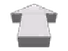

Follow arrow — concepts
Each drawn inside the rotation safe zone, then shown at the shipped 44px over a scene. The dashed circle is not decoration: the GW2 arrow is free-rotated by an 8-corner SetTexCoord, so anything outside the inscribed circle is cut at some bearings. The square's corners are unusable.
A — TodaySHIPPED
Fits with 10.5px to spare — but its ink sits 8px above centre, so it orbits its own axis as it turns. Body 146×219 of a 256 canvas.
B — DartCLOSEST TO TODAY
Same silhouette, balanced on the centre and hollow. The dark core keeps it readable over snow and sand, where a solid gold arrow disappears.
C — Ring needleCARRIES DISTANCE
The ring is a progress arc: full when you accept, closing as you approach, empty on arrival. Distance without reading a number. Costs a second texture — the ring cannot rotate with the needle.
D — PylonMATCHES THE WORLD PIN
The diamond head is the same shape as the world pin and the compass plate, so all three read as one system. Busiest of the four at 44px — the head competes with the tail.

Standalone still runs the sprite sheet
Without GW2 UI the arrow is arrow.tga, a 512×512 sheet of 108 pre-rendered cells (9×12, 56×42 each) — the vanilla technique, one cell per 3.3°. The 8-corner SetTexCoord already used in GW2 mode rotates a single texture freely and needs no sheet, so whichever concept wins can serve BOTH modes from one 256×256 file. That is a 220 KB asset deleted, not just replaced.